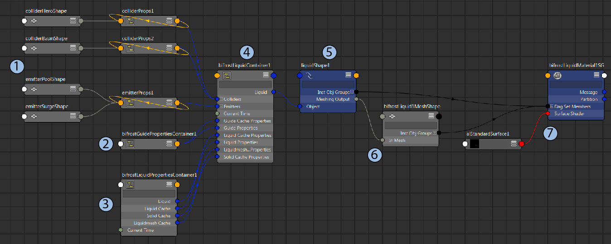

Bifrost 模拟中包含多个连接在一起的对象、特性和容器节点。编辑并优化模拟时，需要在多个位置调整属性。尽管可以使用“Bifrost 流体”(Bifrost Fluids)菜单和“属性编辑器”(Attribute Editor)执行大部分工作，但是“节点编辑器”(Node Editor)对于了解各种元素之间的关系非常有用。
下图是基本液体模拟节点图的简化视图。Aero 模拟涉及到一些类似元素，但通常更为简单。

该图中包含两个碰撞对象网格和两个发射器网格，这些网格通过碰撞对象和发射器特性连接到主容器。您可以将其他网格类型的类似特性添加到场景中。每个网格特性都具有与如何在模拟中使用网格相关的属性，例如，发射器特性具有连续发射、密度等的属性。
在本示例中，碰撞对象网格使用单独的特性节点。这允许它们使用不同的设置。这样，您可以通过使用“Bifrost 流体”(Bifrost Fluids)菜单上的命令逐一添加网格来连接它们。
发射器网格共享同一发射器特性。这意味着它们始终使用相同的设置，您无需调整多个特性上的设置。这样，您可以通过同时添加网格或者通过先选择现有特性来连接它们。
通过重新关联该图（即，根据需要添加新特性或删除不需要的特性），可以更改网格的连接方式。